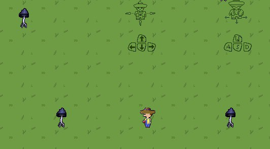
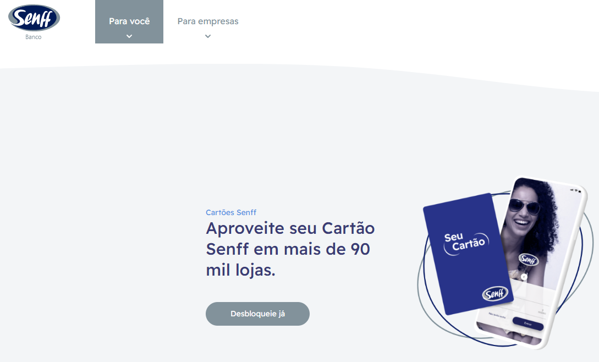

Sobre mim

"An ordinary person without starting equipment but all the possibilities."
Graduando em Engenharia de Software no Instituto Federal do Paraná, graduado em Adminstração de Empresas pela Unespar - Universidade Estadual do Paraná.
Técnico em informática pelo Instituto Federal do Paraná, onde tive meu primeiro contato com a programação e desenvolvimento de sistemas.
Atualmente trabalho como desenvolvedor fullstack na Nextage, onde desenvolvo e mantenho sistemas internos e externos, utilizando diversas tecnologias.
O principal objetivo deste protifólio é fixar conhecimentos de HTML e CSS, para obtenção parcial de conceitos para o primeiro trimestre da disciplina Programação WEB ministrada pelo professor Frank Willian C. de Oliveira.
Esse projeto não tem como objetivo ser um protifólio real e me apresentar para o mercardo de trabalho, mas sim para fixar conhecimentos.
Tecnologias
-

Java
-

C#
-

MySql
-

PostGres
-

Android
-

Git
-

Python
-

Ruby
-

React
-

CSS
-

HTML
Projetos
-

Farms Invaders
Projeto de jogo eletrônico desenvolvido durante as aulas de Programação Orientada a Objetos do curso de Engenharia de Software ministradas no Instituto Federal do Paraná.
A ideia inicial do projeto era ser um jogo no estilo Space Invaders (1978). O objetivo principal deste projeto foi compreender e fixar elementos básicos de programação orientada a objetos.Tecnologias utilizadas:


-

Portal do Aluno
Projeto de um portal do aluno para a UniFatecie desenvolvido em algumas semanas em grupo, o portal teria informações sobre faltas, matriculas, alunos, materias, etc.
O objetivo principal deste projeto foi nos desafiar e aprender os princiapis conceitos de JavaSpring, arquitetura e organização de projetos.Tecnologias utilizadas:


-

Separador de PDF
Projeto simples de um separador de PDF em console, desenolvido durante o primeiro ano do curso de Engenharia de Software.
O objetivo principal deste projeto foi fixar conhecimentos de python e manipulação de arquivos, além de agilizar alguns processos no trabalho.Tecnologias utilizadas:

-

Senff - Nextage
Na Nextage, trabalho como desenvolvedor fullstack, desenvolvendo e mantendo sistemas internos e externos, utilizando diversas tecnologias.
Um dos principais projetos em que atuo na Nextage é o banco Senff.
Meu principal objetivo nesse projeto é aprender e me consolidar como desenvolvedor, além de ajudar a empresa a alcançar seus objetivos.Tecnologias utilizadas: